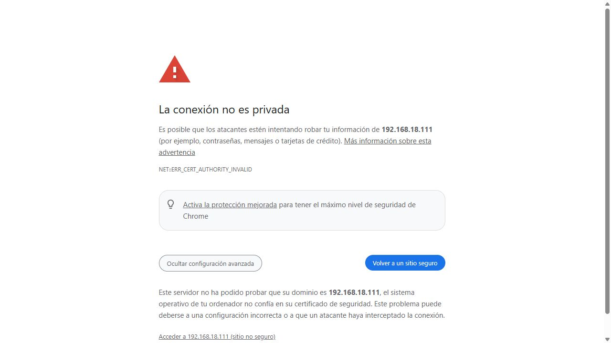

Bloquino en un Mac
Lo que cambia para un alumno que trae un Mac a la sala. El notebook del profesor y el resto de la clase siguen igual: ver Una clase con Bloquino.
| Qué | En un Mac | Con qué |
|---|---|---|
| Armar el circuito, programar con bloques y simular | Sí | Chrome o Edge. No usa nada propio de Windows. |
| Cargar a la placa | Sí | Solo Chrome o Edge. Safari y Firefox no pueden: les falta la conexión al puerto USB. |
Abrir y descargar proyectos .bloquino | Sí | Los mismos archivos sirven en Windows y en Mac. |
| Bloquino en la casa, sin la sala | No | La aplicación instalable será solo para Windows. Ver En la casa. |
1 Antes de la primera clase
Instalar Chrome
El Mac trae Safari, que simula pero no carga a la placa. Instalar Google Chrome (o Microsoft Edge) antes de la clase: en la sala no hay internet.
En la clase, abrir Bloquino siempre con Chrome: el proyecto se guarda por navegador, y uno armado en Safari no aparece en Chrome.
Cable o adaptador
El cable del kit termina en un USB grande (USB-A). Los Mac portátiles recientes solo tienen puertos USB-C: hace falta un adaptador de USB-C a USB-A, o un cable USB-C a USB-B.
Un adaptador que solo carga no sirve: tiene que pasar datos.
Permiso de red local
Conectar el Mac al wifi de la sala y abrir en Chrome la dirección de la pizarra. En macOS 15 o posterior aparece una pregunta:
«Google Chrome quiere buscar dispositivos en tu red local y conectarse a ellos» → Permitir.
Si se respondió que no, la página no abre aunque en los otros equipos sí. Se arregla en Ajustes del Sistema → Privacidad y seguridad → Red local, activando Google Chrome.
2 El certificado de la sala
Igual que en Windows, para cargar a la placa el Mac tiene que confiar en el certificado de la sala. Se hace una vez. Tres caminos; el A y el B dejan el Mac sin avisos.
A. Con Acceso a Llaveros
- En Chrome, abrir
http://<IP>/ca.crt. Bajabloquino-ca.crta Descargas. - Doble clic en el archivo. Se abre Acceso a Llaveros; elegir el llavero inicio de sesión y Agregar.
- En ese llavero, pestaña Certificados, doble clic en Bloquino (sala). Sale con una marca roja: todavía no es de confianza.
- Abrir Confiar y, en «Al utilizar este certificado», elegir Confiar siempre.
- Cerrar esa ventana. Pide la contraseña del Mac (o Touch ID).
- Salir de Chrome con ⌘ Q y abrirlo de nuevo.
Cerrar la ventana con el botón rojo no basta: en un Mac el programa sigue abierto.
B. Con la Terminal
La ventana del paso A cambia según la versión de macOS. Este comando hace lo mismo en todas. Abrir Terminal (buscarla con ⌘ Espacio) y pegar:
security add-trusted-cert -r trustRoot -k ~/Library/Keychains/login.keychain-db ~/Downloads/bloquino-ca.crt
Pide la contraseña del Mac. Después, salir de Chrome con ⌘ Q y abrirlo de nuevo.
No necesita ser administrador: la confianza queda solo para ese usuario. Para quitarla, borrar «Bloquino (sala)» en Acceso a Llaveros.
C. Aceptar el aviso del navegador

https://: el proyecto se guarda por dirección, y uno armado en http:// no aparece en la otra.3 Conectar la placa
Permitir el accesorio
Al enchufar el Arduino, un Mac portátil con chip de Apple pregunta «¿Permitir que el accesorio se conecte?» → Permitir.
Si se respondió que no, desenchufar y volver a enchufar: pregunta otra vez.
Cargar a la placa
Pulsar Cargar a la placa. La primera vez Chrome muestra una lista: la placa aparece con un nombre como USB Serial o cu.usbserial-… (en Windows dice «COM»). Elegirla y Conectar.
Las cargas siguientes no vuelven a preguntar.
El driver de la placa
La placa del kit usa el chip USB CH340. macOS trae su driver desde la versión 10.14, así que normalmente no hay que instalar nada.
- Menú de la manzana (arriba a la izquierda) → Acerca de este Mac → Más información → Informe del sistema → USB.
- Si no aparece nada parecido a USB Serial o USB2.0-Serial: es el cable o el adaptador (solo carga, sin datos).
- Si aparece pero Chrome no la lista: instalar en la casa, con internet, el driver CH34xVCPDriver del fabricante (WCH). Pide la contraseña de un administrador, aprobarlo en Ajustes del Sistema → Privacidad y seguridad y reiniciar.
4 En cada clase
Todo lo demás es igual que en los otros equipos. Lo único distinto es el teclado y dónde quedan los archivos:
| Para | En Windows | En un Mac |
|---|---|---|
| Recargar la página si se ve antigua | Ctrl F5 | ⌘ Shift R |
| Cerrar el navegador del todo | Cerrar la ventana | ⌘ Q |
| Clic derecho | Botón derecho | Dos dedos en el trackpad, o Control + clic |
| Dónde queda un proyecto descargado | Descargas | Descargas (en el Finder) |
Los atajos dentro de Bloquino (deshacer, copiar un bloque) no están comprobados en Mac: probar con ⌘ en vez de Ctrl.
Si algo falla
| Qué pasa en el Mac | Qué hacer |
|---|---|
| La página no abre y en los otros equipos sí | Falta el permiso de red local de Chrome. O el Mac quedó en otra red (wifi de invitados, el celular). |
| Abre, pero «Cargar a la placa» dice que el navegador no puede | Está en Safari o Firefox: abrir la dirección en Chrome. |
| «Cargar a la placa» ofrece la dirección segura | Entró por http://: descargar el proyecto y abrirlo en la dirección https://. |
| Sigue el aviso «La conexión no es privada» después de instalar el certificado | Falta el «Confiar siempre» (camino A, paso 4), o Chrome no se cerró con ⌘ Q. |
| La lista de placas sale vacía | Cable o adaptador sin datos, se negó el accesorio, o falta el driver. |
| «La placa está ocupada» | Otro programa tiene el puerto: el Arduino IDE, u otra pestaña de Bloquino. Cerrarlo. |
| «La placa no responde» | Cable mal puesto o no es un UNO. La próxima carga vuelve a preguntar por la placa. |
Prueba de 5 minutos
Con el Mac del alumno, en la red de la sala y con la sala levantada, antes de la primera clase.
- Chrome abre la dirección
https://de la sala y se ve la página del alumno. - Iniciar simulación: la luz de la placa del lienzo parpadea.
- Sacar un LED de la paleta, moverlo y unirlo a la placa con un cable.
- Abrir Código, arrastrar un bloque y deshacer.
- Certificado instalado: la dirección
https://abre sin aviso tras reabrir Chrome. - Arduino conectado: aparece en la lista de Cargar a la placa.
- La carga termina y la luz «L» de la placa real parpadea.
- Descargar el proyecto, pulsar Nuevo y volver a abrirlo con Abrir.
Anotar la versión de macOS (menú de la manzana → Acerca de este Mac) y qué paso no calzó, para corregir esta guía.
En la casa
Bloquino compila los programas en el notebook del profesor, así que fuera de la sala la página no simula ni carga. La aplicación instalable que quita esa dependencia está planificada solo para Windows.
Mientras tanto, el alumno con Mac trabaja en la sala y se lleva su proyecto como archivo .bloquino, que sigue abriendo en la clase siguiente.